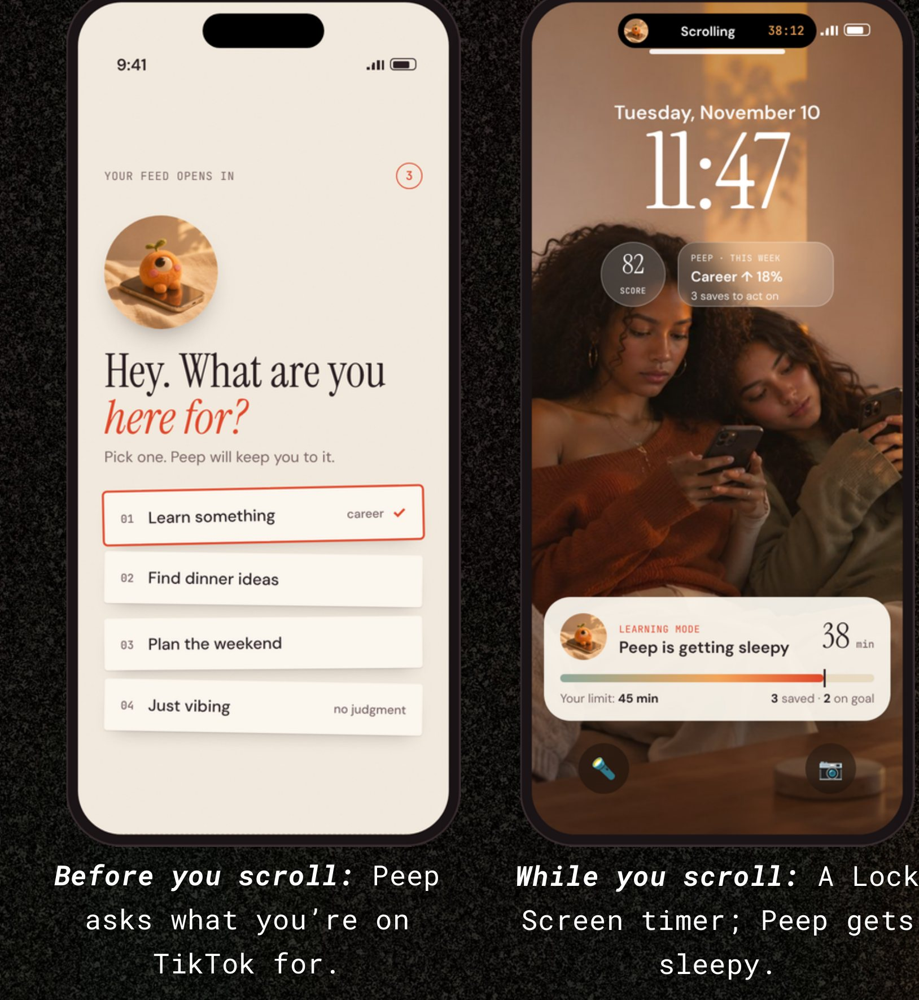
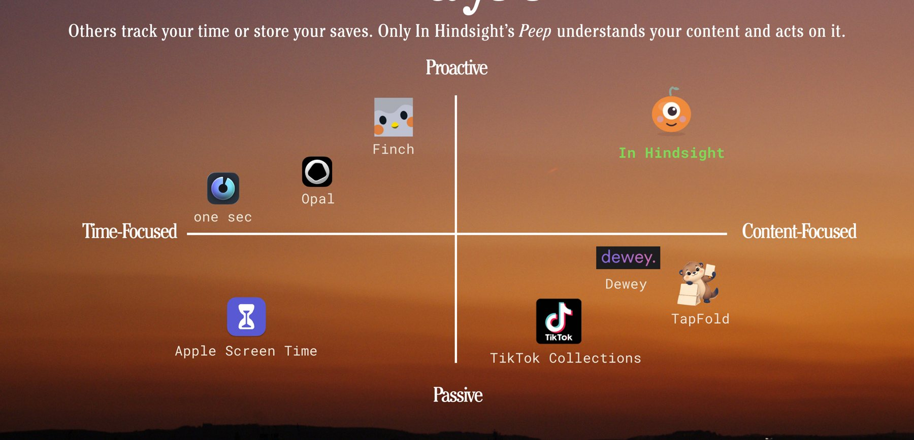
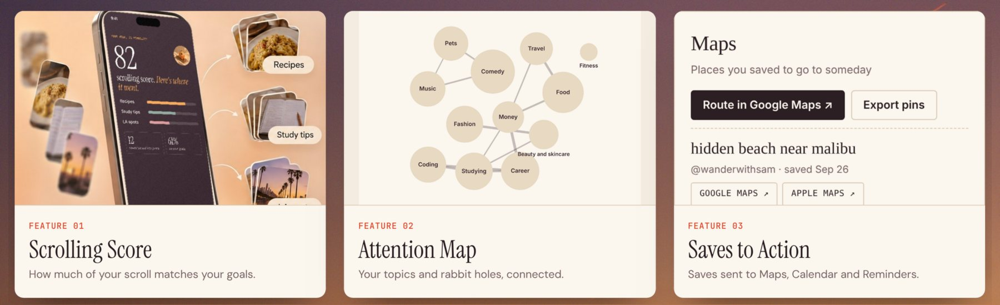
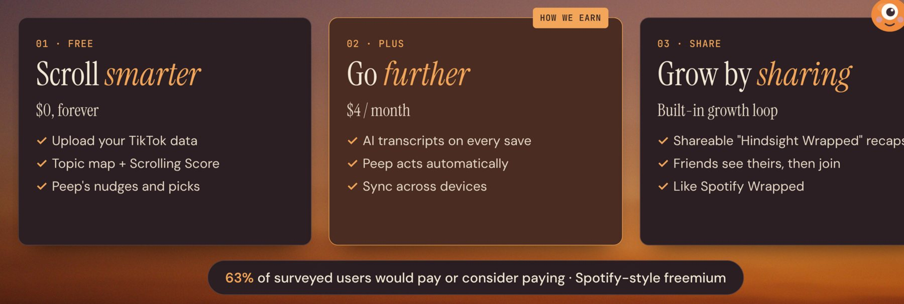
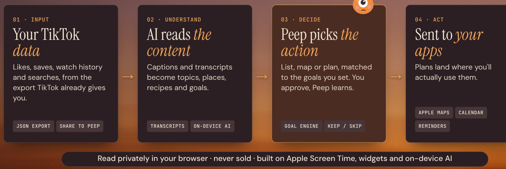

A buddy, not a blocker

69% already scroll longer than they meant to. They don't need guilt. They need help getting something out of it.
We save everything, then forget it all. In Hindsight reads your TikTok data, and Peep, your doomscrolling buddy, turns your saves into plans.
We save everything, then forget it all. 94% of people I surveyed have given up finding a saved video.
Peep: an AI buddy that scrolls with you and sends your saves to Maps, Calendar and Reminders.
A buddy, not a blocker. No guilt, just help getting something out of it.
Every save is a promise to come back. Then the feed moves on and the saves pile up.
Screen time apps track your time. Collections store your saves. Nothing actually does anything with them.
Young adults, mostly USC students, reached through SideChat, Snapchat, Reddit and iMessage.

Your data already exists. Peep just makes it useful.





69% already scroll longer than they meant to. They don't need guilt. They need help getting something out of it.

Upload and explore for free. Plus adds AI on every save and lets Peep act on its own. 63% of people I surveyed would pay or consider it.

People are handing over their whole scrolling history. It's read in your browser and never sold.
MVP live at inhindsight.net, built in 2 months.

The survey changed the product more than any feature did.
Keeping data on your device shaped everything, and it's a reason to trust it.
100 users in January 2027.
TestFlight in spring 2027, 1,000 users by summer.